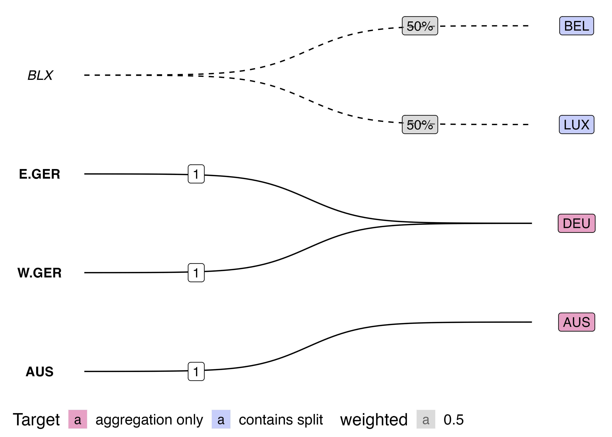

Last updated: 2022-11-10
Checks: 6 1
Knit directory: viz-panel-maps/
This reproducible R Markdown analysis was created with workflowr (version 1.7.0). The Checks tab describes the reproducibility checks that were applied when the results were created. The Past versions tab lists the development history.
The R Markdown file has unstaged changes. To know which version of
the R Markdown file created these results, you’ll want to first commit
it to the Git repo. If you’re still working on the analysis, you can
ignore this warning. When you’re finished, you can run
wflow_publish to commit the R Markdown file and build the
HTML.
Great job! The global environment was empty. Objects defined in the global environment can affect the analysis in your R Markdown file in unknown ways. For reproduciblity it’s best to always run the code in an empty environment.
The command set.seed(20221110) was run prior to running
the code in the R Markdown file. Setting a seed ensures that any results
that rely on randomness, e.g. subsampling or permutations, are
reproducible.
Great job! Recording the operating system, R version, and package versions is critical for reproducibility.
Nice! There were no cached chunks for this analysis, so you can be confident that you successfully produced the results during this run.
Great job! Using relative paths to the files within your workflowr project makes it easier to run your code on other machines.
Great! You are using Git for version control. Tracking code development and connecting the code version to the results is critical for reproducibility.
The results in this page were generated with repository version b7be0ac. See the Past versions tab to see a history of the changes made to the R Markdown and HTML files.
Note that you need to be careful to ensure that all relevant files for
the analysis have been committed to Git prior to generating the results
(you can use wflow_publish or
wflow_git_commit). workflowr only checks the R Markdown
file, but you know if there are other scripts or data files that it
depends on. Below is the status of the Git repository when the results
were generated:
Ignored files:
Ignored: .DS_Store
Ignored: .Rhistory
Ignored: .Rproj.user/
Ignored: README_files/
Untracked files:
Untracked: code/
Unstaged changes:
Deleted: R/edges-to-matrix.R
Deleted: R/edges.R
Deleted: R/ggalluvial.R
Deleted: R/ggbump-geom-bump-attempt.R
Deleted: R/ggbump-sigmoid-attempt.R
Deleted: R/ggbump-sigmoid-graph-edges.R
Deleted: R/ggbump-sigmoid-map.R
Deleted: R/ggbump-sigmoid.R
Deleted: R/ggbump-tutorial.R
Deleted: R/ggraph-tidygraph.R
Deleted: R/ggsankey.R
Deleted: R/tidygraph.R
Modified: analysis/viz-country-concord.Rmd
Deleted: ggalluvial.png
Deleted: ggbump-sigmoid-graph-edges.jpg
Deleted: ggbump-sigmoid-graph-edges.png
Deleted: ggsankey.png
Note that any generated files, e.g. HTML, png, CSS, etc., are not included in this status report because it is ok for generated content to have uncommitted changes.
These are the previous versions of the repository in which changes were
made to the R Markdown (analysis/viz-country-concord.Rmd)
and HTML (docs/viz-country-concord.html) files. If you’ve
configured a remote Git repository (see ?wflow_git_remote),
click on the hyperlinks in the table below to view the files as they
were in that past version.
| File | Version | Author | Date | Message |
|---|---|---|---|---|
| Rmd | b7be0ac | cynthiahqy | 2022-11-10 | wflow_git_commit(all = TRUE) |
| html | b7be0ac | cynthiahqy | 2022-11-10 | wflow_git_commit(all = TRUE) |
| html | 1954472 | cynthiahqy | 2022-11-10 | Build site. |
| Rmd | 75b45e3 | cynthiahqy | 2022-11-10 | wflow_publish("analysis/viz-country-concord.Rmd") |
This repo contains a collection of ggplot experiments for visualising
panel maps use in {conformr}
documentation
This is this mapping (recorded as graph edges) I tried to visualise:
# A tibble: 5 × 3
from to weighted
<chr> <chr> <dbl>
1 BLX BEL 0.5
2 BLX LUX 0.5
3 E.GER DEU 1
4 W.GER DEU 1
5 AUS AUS 1 ggplot extensions I experimented with (code in R/
folder):
{ggraph}: way too flexible, no sensible way to keep the
from, and to nodes lined up. Found some good
{tidygraph} and {ggraph} resources though:
{ggsankey}:
keeps from and to nodes stacked in “stages”,
and connects nodes in each stage with “flow” ribbons
{ggalluvial}:
terminology in documentation (lodes/alluvia/stratum..) was a bit
difficult to follow (use cheatsheets!);
too rigid for my purposes, and rescaling of weighted as
flows between nodes obscures the weight information{ggbump::geom_bump}:
removes the “flow” to line-width connection from sankey/alluvials, and
adds some flexibility for node positioning, but is annoyingly
restrictive requirements for aes() mapping – couldn’t quite
map data into “rank” format{ggbump::geom_sigmoid}:
more flexible geom that probably powers geom_bump(), just
requires calculation of starting and ending x,y coordinates for each
set/stage of nodes.Aside on errors when reproducing the map with sigmoid curves from
ggbump readme:
sf_use_s2(FALSE) – see github issueformat()
but changing digits = 0 to digits = 1 seemed
to fix the errorlabelled sigmoid plot: code
source("code/viz-country-concord/ggbump-sigmoid-graph-edges.R")Saving 7 x 5 in image
sankey flow diagram using {ggsankey}: code
sankey flow diagram
alluvial plot using {ggalluvial}: code
alluvial plot
Graphs can also be represented in matrix form:
pm_mtx <- source("code/viz-country-concord/edges-to-matrix.R")$value
pm_mtx BEL LUX DEU AUS
BLX 0.5 0.5 0 0
E.GER 0.0 0.0 1 0
W.GER 0.0 0.0 1 0
AUS 0.0 0.0 0 1Notice the condition that weights sum to one can be checked by simply summing up each row:
## weights sum to one
col_ones <- matrix(1, nrow=nrow(pm_mtx))
pm_mtx %*% col_ones == 1 [,1]
BLX TRUE
E.GER TRUE
W.GER TRUE
AUS TRUEapply the transformation:
src_val <- matrix(100, nrow=nrow(pm_mtx))
(new_val <- t(pm_mtx) %*% src_val) [,1]
BEL 50
LUX 50
DEU 200
AUS 100Notice that we get equivalent totals for “free” because the weights in each row sum to one:
sum(src_val) == sum(new_val)[1] TRUEThe coverage test is equivalent to a conformability condition.
## add an extra source class
bad_x <- rep_len(100, nrow(pm_mtx) + 1)
## now we cannot use the panel map
t(pm_mtx) %*% as.matrix(bad_x)Error in t(pm_mtx) %*% as.matrix(bad_x): non-conformable argumentsPanel maps are uni-directional except for one-from-one mappings
(pm_mtx %*% new_val) == src_val [,1]
BLX FALSE
E.GER FALSE
W.GER FALSE
AUS TRUE
sessionInfo()R version 4.2.1 (2022-06-23)
Platform: x86_64-apple-darwin17.0 (64-bit)
Running under: macOS Big Sur ... 10.16
Matrix products: default
BLAS: /Library/Frameworks/R.framework/Versions/4.2/Resources/lib/libRblas.0.dylib
LAPACK: /Library/Frameworks/R.framework/Versions/4.2/Resources/lib/libRlapack.dylib
locale:
[1] en_AU.UTF-8/en_AU.UTF-8/en_AU.UTF-8/C/en_AU.UTF-8/en_AU.UTF-8
attached base packages:
[1] stats graphics grDevices utils datasets methods base
other attached packages:
[1] ggbump_0.1.0 ggplot2_3.3.6 tidyr_1.2.1 dplyr_1.0.10 tibble_3.1.8
loaded via a namespace (and not attached):
[1] tidyselect_1.2.0 xfun_0.34 bslib_0.4.1 purrr_0.3.5
[5] colorspace_2.0-3 vctrs_0.5.0 generics_0.1.3 htmltools_0.5.3
[9] yaml_2.3.6 utf8_1.2.2 rlang_1.0.6 jquerylib_0.1.4
[13] later_1.3.0 pillar_1.8.1 glue_1.6.2 withr_2.5.0
[17] DBI_1.1.3 lifecycle_1.0.3 stringr_1.4.1 munsell_0.5.0
[21] gtable_0.3.1 workflowr_1.7.0 ragg_1.2.2 evaluate_0.16
[25] labeling_0.4.2 knitr_1.40 fastmap_1.1.0 httpuv_1.6.6
[29] fansi_1.0.3 Rcpp_1.0.9 promises_1.2.0.1 scales_1.2.1
[33] cachem_1.0.6 jsonlite_1.8.2 farver_2.1.1 systemfonts_1.0.4
[37] fs_1.5.2 textshaping_0.3.6 digest_0.6.30 stringi_1.7.8
[41] rprojroot_2.0.3 grid_4.2.1 cowplot_1.1.1 here_1.0.1
[45] cli_3.4.1 tools_4.2.1 magrittr_2.0.3 sass_0.4.2
[49] pacman_0.5.1 wesanderson_0.3.6 whisker_0.4 pkgconfig_2.0.3
[53] ellipsis_0.3.2 data.table_1.14.2 assertthat_0.2.1 rmarkdown_2.17
[57] rstudioapi_0.14 R6_2.5.1 git2r_0.30.1 compiler_4.2.1